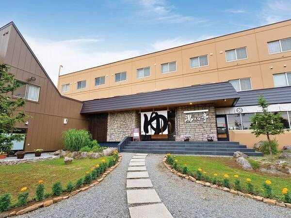
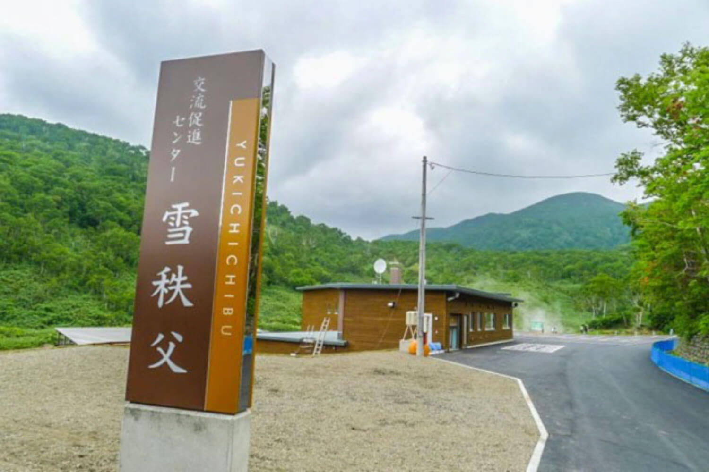
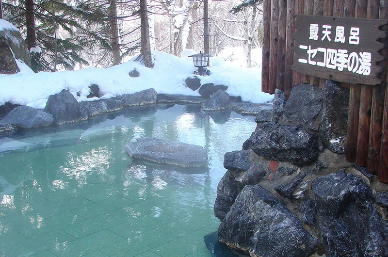

Yugokorotei
Classic onsen with scenic surroundings and soothing thermal baths — perfect after a day in the snow or hiking.

Yukichichibu Onsen
Popular mud onsen featuring mineral-rich mud baths alongside outdoor hot springs, surrounded by mountain scenery — especially relaxing after skiing or hiking.

Iroha Hot Spring
Public hot spring with indoor and outdoor baths; relaxed atmosphere and easy access, ideal for unwinding after skiing.